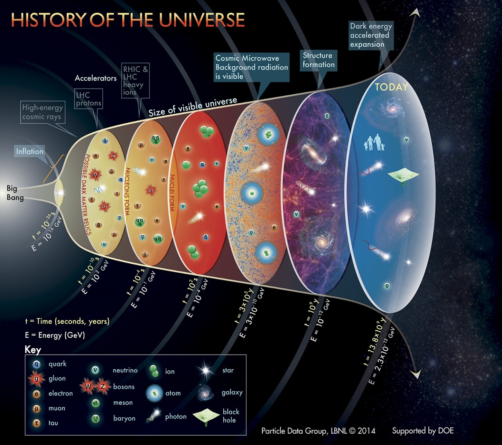
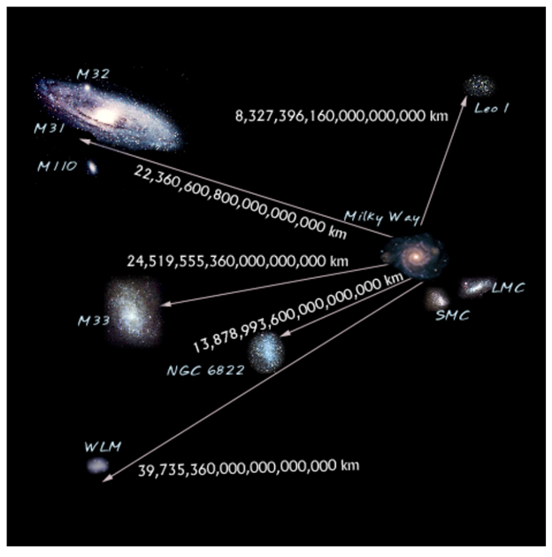

ENG0018 Computer Laboratory 2023/24
Student URN: 6826463
Student URN: 6826463
This exploration navigates the Universe's evolution from a small, dense, and hot state in the early cosmos, propelled by Cosmic Inflation. Denser regions, born from matter-antimatter annihilation, transform from subatomic scales to trillions of kilometers, giving rise to stars and galaxies. Currently, the Universe defies the cosmic speed limit, expanding faster than light. While the speed of light governs matter within, the Universe itself faces no such constraint. This relentless expansion erects an insurmountable horizon, framing the Observable Universe and its trillions of galaxies. Time unveils a future where galaxies cross this barrier, their light forever eluding us, except for the Local Group, a gravitationally bound cluster with the Milky Way, Andromeda, and smaller galaxies. This study unveils the dynamic interplay between cosmic forces and cosmic boundaries, shaping the past, present, and future of our observable cosmos.
Is the Universe expanding, propelling galaxies away from us?
The journey begins with the Big Bang Theory, serving as the model to elucidate the early Universe's development, the creation of matter, space, and time. In this cosmic narrative, the Universe expands from an initial small, dense, and hot state through the process of Cosmic Inflation. Denser regions emerge between 10^(-43) s and 10^(-4) s, a consequence of matter-antimatter annihilation. With more matter than antimatter, these denser pockets persist, and over time, the distances between them transition from subatomic scales to trillions of kilometers. As the Universe cools, hydrogen and helium atoms form, leading to the subsequent fusion and birth of stars (O'Neill, 2015). Presently, the Universe defies the cosmic speed limit set by the theory of relativity, expanding faster than the speed of light (Krauss & Starkman, 2000).
The point at which the expansion started, the Big Bang. Edwin Hubble's findings, like red-shifted light from distant galaxies and microwave background radiation, suggest the universe began from a single, expanding, and cooling point. While exact details of the Big Bang remain uncertain, scientists have outlined a timeline. At 10^(-43) seconds after, the universe's conditions are unclear, as current technology can't reveal it. It might have been infinitely hot, dense, and small. The cosmic inflation period followed, leading to the formation of matter and antimatter. Particles like photons, leptons, and quarks emerged. Matter and antimatter annihilated, leaving a matter-dominated universe. At 10^(-4) seconds, quarks combined into protons and neutrons, but atoms had not formed yet. A hundred seconds later, the universe resembled the inside of a star, with lithium and helium nuclei forming. Two hundred thousand years later, it cooled enough for helium and hydrogen atoms to form through decoupling. This is when radiation and matter separate, allowing photons to become the microwave background radiation we detect today. Over millions of years, the universe's first large-scale structures formed from density fluctuations. More structures emerged from heavy elements formed during the gravitational collapse of stars. Presently, the proton-to-neutron ratio is still about 4 to 1, and clusters of galaxies and stars have formed from matter clumps in space (O'Neill, 2015) (See Fig. 1 for a graphical representation of the universe timeline)

Fig. 1 History of the universe. Published by Particle Data Group, LBNL 2014
The Local Group Galaxies formed as the universe expanded and cooled, giving us a closer look at our galaxy, the Milky Way, and our local group. As dense matter in the universe came closer, galaxies, including the Milky Way, Andromeda Galaxy (M31), M33, and smaller dwarf galaxies, emerged. The proximity of these galaxies in our local group means they are gravitationally bound, suggesting a future merger to create a larger galaxy called Milkdromeda (Boylan-Kolchin, et al., 2016) (See Fig. 2 for an image of our local group)

Fig. 2 Image of the Local Group as a composite of real images of the actual galaxies in the Local Group. Published by NASA.
According to general relativity, space and time form a connected entity known as space-time, uniting the three dimensions of space with a fourth dimension of time. Approximately 13.7 billion years ago, the Big Bang initiated the expansion of space-time (Einstein, 1931). As the universe expands, galaxies drift apart at a speed surpassing that of light (Krauss & Starkman, 2000). According to the theory of relativity, the speed of light serves as the cosmic speed limit, no object can traverse through space faster than this speed. However, this limit does not apply to the universe itself; distant galaxies move faster than light due to the expansive nature of space (Einstein, 1931). Consequently, the universe acts as an implicit barrier. Even if we could travel at the speed of light, reaching galaxies far beyond our local group would prove impossible, as they are propelled away faster than light. Eventually, these galaxies might vanish from view, their light unable to reach our telescopes. The Hubble constant, a fixed ratio of roughly +71 kilometers per second for every 3.3 million light years, governs the rate at which objects move away. For instance, a galaxy 6.6 million light years away would recede at an additional 142 kilometers per second. Notably, only 6% of the Universe lies within our observational horizon, leaving 94% and all its galaxies perpetually beyond our reach. (Krauss & Starkman, 2000).
Our journey through the cosmic tapestry reveals a captivating narrative of the Universe's unfolding. The Big Bang Theory serves as the foundation, elucidating the early development of matter, space, and time. Cosmic Inflation shapes the cosmos, birthing galaxies and setting the stage for the evolution of stars. The Universe's relentless expansion, surpassing the speed of light, creates an enduring barrier defining the Observable Universe filled with trillions of galaxies. Time, an ever-present force, foretells a future where distant galaxies, once within our view, vanish beyond the cosmic horizon. The Local Group, featuring the Milky Way, Andromeda, and smaller galaxies, stands as a gravitational example of the cosmos' complex dynamics. As galaxies drift away, their light fades, highlighting the temporary nature of our observations in the cosmos. This exploration underscores the dynamic interplay between cosmic forces and boundaries, offering a profound perspective on the complex dynamics of celestial bodies. While the Universe's expansion remains relentless, our understanding of its past, present, and future continues to evolve, leaving us with an awe-inspiring glimpse into the cosmic wonders that shape our observable cosmos.